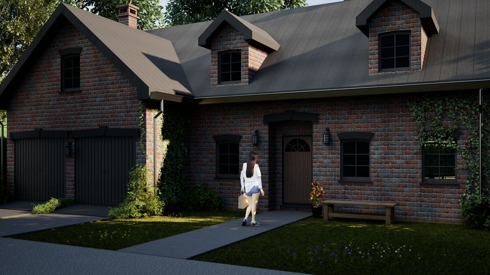
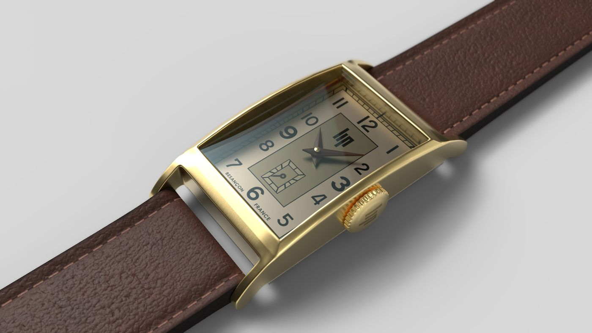
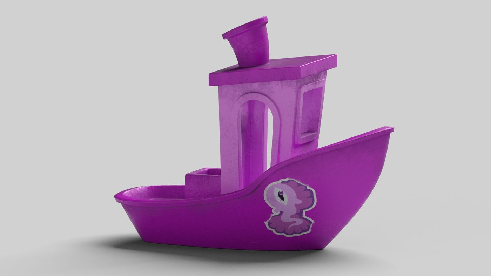
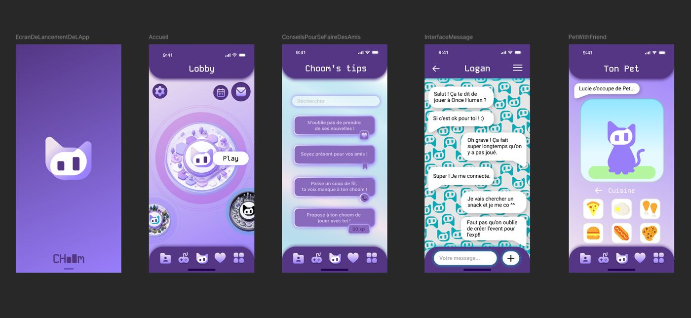
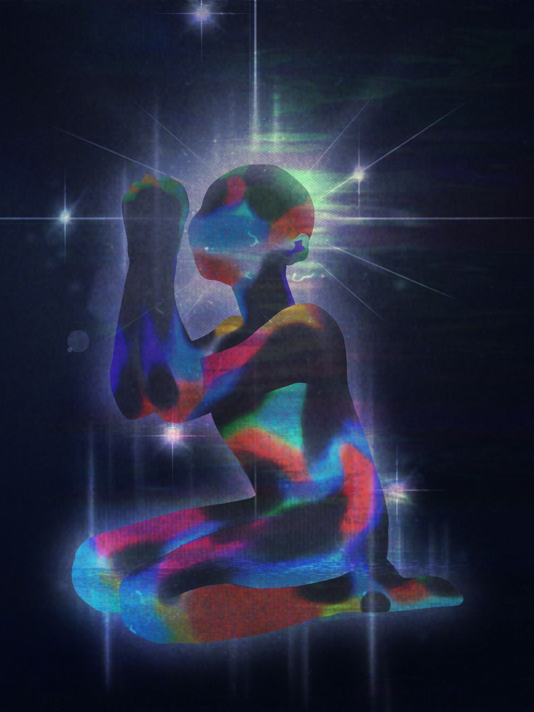

Rendu architectural 3D
Modélisation et mise en lumière d'une maison réalisées sous Twinmotion, avec un travail particulier sur les matériaux et l'ambiance extérieure.
Cinq projets qui illustrent la diversité de mon travail : 3D, UI design et illustration.

Modélisation et mise en lumière d'une maison réalisées sous Twinmotion, avec un travail particulier sur les matériaux et l'ambiance extérieure.

Modélisation détaillée d'une montre, du boîtier au bracelet, avec un rendu soigné des matériaux (cuir, laiton, verre).

Modélisation stylisée d'un petit bateau et rendu couleur, pensés pour explorer un univers plus illustratif.

Conception de l'interface d'une application mobile fictive : écrans de lancement, messagerie et espace personnalisable.

Illustration numérique réalisée sur tablette graphique, jouant avec la couleur et la lumière pour créer une atmosphère singulière.